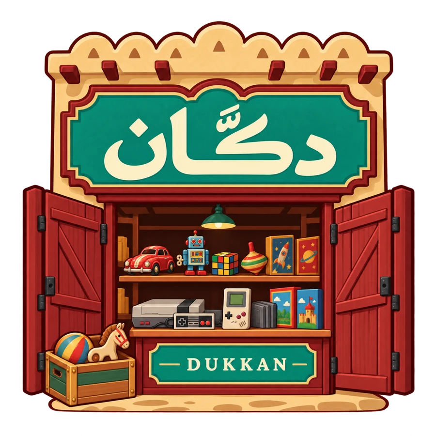
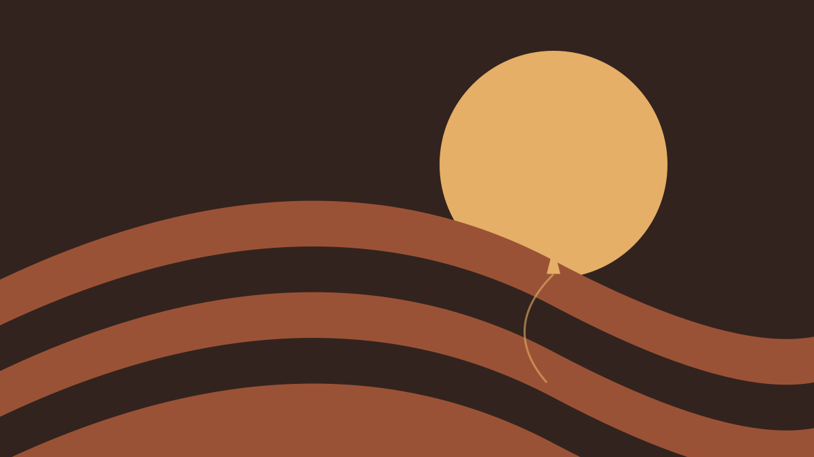

Find your next
favorite.
A controller-operated storefront for curated native Linux games. Discover, install and return to play from inside the Zaman experience.

Browse. Discover.
Keep playing.
Dukkan brings game discovery, descriptions, screenshots and installation into the console interface. Browse a curated catalog, check your library and follow progress in Activity.
- Discover and Library views, with search
- Game details, screenshots and a full-screen gallery
- Installations continue while you browse or close the store
- Completed installs appear in the Zaman game library
- Uninstalling keeps application saves
Native games.
A familiar console flow.
The current prototype installs a curated selection of ARM64 Flatpak games through Flathub, with launch and library integration supplied by Zaman. Each game needs its own compatibility and controller testing.
Dukkan is an early open-source prototype. It currently has no payment system or publisher upload portal.
Explore the store preview →
Try a sample installation in your browser →Fictional sample game · simulated installationBring your game to Zaman.
Help grow a catalog made for playing with a controller.
Share your project, Linux or ARM64 availability, controller support and distribution license. An existing Flatpak or Flathub package helps; games without one are welcome as integration enquiries.
A submission starts a conversation. Compatibility, catalog inclusion and commercial arrangements require separate review.
Help build
the little shop.
Improve controller navigation, expand game testing, refine the catalog or harden the installation and recovery workflows.